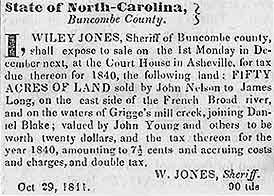

|
Buncombe County, North Carolina
Formed 1791 from Burke and
Rutherford Counties
Land Records
|
Grantor |
Grantee |
Description |
Date |
|
State of NC #2324 |
James Long et al |
50 ac French Broad River |
dated 1817 recorded 1818 |
|
Henry Latimer et al |
James Long |
50 ac ? |
1830 |
|
John Brown agent et al |
James Long |
50 ac |
1830 |
|
Dvid Pressley |
Peter Long |
300 ac Barnes Creek |
dated 1814 recorded 1830 |
|
Grantor |
Grantee |
Description |
Date |
|
Peter Long of Haywood Co |
Anthony Presley |
250 acres Rose Creek |
1822 |
|
James Long and Lewis Graham |
David Presley |
50 ac French Broad River |
1818 |
|
James Long |
Daniel Blake |
100 ac Greggs Mill Creek. Old Wm Underwood's Land on French Broad
River |
1830 |
|
James R Long et al |
Henry Griggs |
163 ac |
1847 |
|
James Long |
Henry Griggs |
50 ac |
1848 |
|
James Long et al |
Henry Griggs |
200 ac Ricky Branch |
1827 |
|
James Long et al |
Shadrack Griggs |
651 ac |
1827 |
|
John Long |
Josiah Hampton |
Power of Attorney |
1847 |
1841 Nov 26. Raleigh Register
and North Carolina Gazette newspaper. Sherriff's sale to be held
on the 1st Monday in December for 1840 taxes due on 50 ac of
land sold by John Nelson to James Long on the east side of the French Broad River, and
on the waters of Griggs mill creek, joining Danile Blake.

1854 Marriage - Rev James R.
Long of Holston Conference to Sarah Fitzgerald dau of Samuel
of Haywood [note: history books say this James R. Long was of
Tennessee and was appointed to the local church in 1851]
|